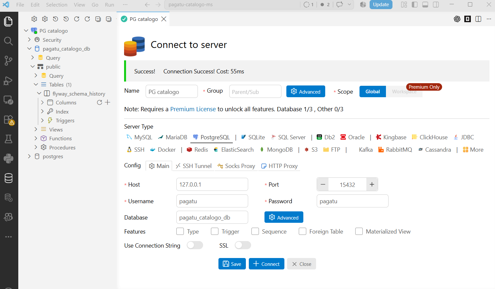
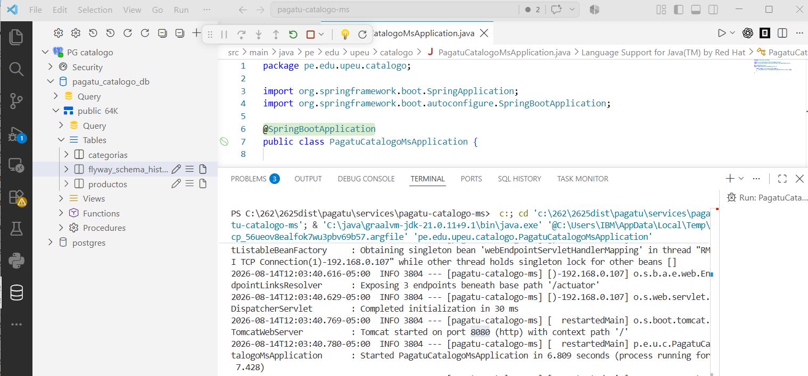

Producto de Unidad 2: Sistema Distribuido Robusto¶
MediZano POS — Evaluación y Sustentación Oficial S12 (CE023 Nivel 3)
[!IMPORTANT]
🚀 Tablero de Enlaces Directos en Vivo para la Sustentación¶
- 📖 Portal de Documentación MkDocs: http://localhost:8000/medizano/
- 📑 Swagger UI Catálogo (
catalogo-ms): http://localhost:8080/swagger-ui/index.html (o:8081)- 📑 Swagger UI Órdenes (
orden-ms): http://localhost:8082/swagger-ui/index.html- 📑 Swagger UI Pagos (
pago-ms): http://localhost:8086/swagger-ui/index.html (o:8083)- 🔭 Eureka Service Discovery: http://localhost:8761/
- 📨 Kafka UI (Kafbat): http://localhost:18085/
- 📊 Grafana Observabilidad: http://localhost:3000/ (Usuario:
admin/ Password:admin)- 📈 Prometheus Server: http://localhost:9090/
1. Propósito de la Evaluación¶
Esta sesión no enseña contenido nuevo: cierra la Unidad II del curso Desarrollo de Aplicaciones Distribuidas. El sílabo (sesión 12) define dos actividades para esta evaluación:
- Resolver la evaluación teórico-práctica de los temas de la Unidad II (sesiones 6 a 11).
- Presentar y sustentar el Sistema distribuido seguro, resiliente, consistente, observable e integrado con cliente frontend.
[!NOTE] Esta sesión no repite lo evaluado en S5: la Unidad I (servicio base, configuración, registro, Gateway y balanceo) ya quedó certificada; S12 evalúa exclusivamente lo que se construyó encima en S6-S11.
2. Producto Evaluado¶
Del sílabo, el producto de la Unidad II es:
Fortalece el sistema distribuido incorporando atributos de calidad, integración frontend y evidencias técnicas de operación real.
El producto completo adaptado al dominio farmacéutico MediZano POS implementa: comunicación resiliente, seguridad distribuida en profundidad, mensajería asíncrona, consistencia distribuida (Saga e idempotencia), observabilidad e integración con cliente web.
Tabla 1. Ensamblado de Capacidades de la Unidad II (MediZano POS)¶
| Sesión | Tema / Atributo | Capacidad que Agrega | Implementación Real en MediZano POS |
|---|---|---|---|
| S6 | Comunicación síncrona resiliente | Timeout, reintentos y fallback ante caídas. | orden-ms consulta y reserva stock en catalogo-ms e inventario-ms vía Spring Cloud OpenFeign con Resilience4j (timeout 2s, 3 reintentos y fallback controlado sin propagar caída en cascada). |
| S7 | Seguridad distribuida y control de acceso | Autenticación, autorización y protección de rutas. | JWT asimétrico / Keycloak con roles RBAC (ROLE_ADMIN, ROLE_FARMACEUTICO, ROLE_CLIENTE). Cada microservicio valida el token de forma autónoma (Defensa en profundidad). |
| S8 | Mensajería asíncrona entre servicios | Publicación y consumo de eventos desacoplados. | orden-ms publica el evento orden.creada al topic orden-eventos en Apache Kafka. pago-ms lo consume asíncronamente sin acoplamiento temporal ni HTTP directo. |
| S9 | Consistencia distribuida en procesos | Consistencia eventual, compensación e idempotencia. | Patrón Saga Coreografiada. Si el cobro falla, pago-ms emite pago.fallido, orden-ms cancela el pedido y compensa restaurando el stock en inventario-ms. Consumidor protegido con uk_pagos_orden. |
| S10 | Observabilidad y diagnóstico | Logs correlacionados, métricas y dashboards. | Trazabilidad con traceId en cabeceras y MDC. Métricas expuestas vía Actuator + Prometheus y logs indexados en Loki, correlacionados en tableros interactivos de Grafana (:3000). |
| S11 | Integración con cliente frontend | Consumo vía Gateway y protección por roles. | SPA Angular 17 sobre Nginx (:4200) que consume la API exclusivamente a través del Gateway (:8090 / :18080) con Guards de ruta (canActivate) según rol de usuario. |
| S12 | Integración y Sustentación Técnica | Demostración end-to-end y defensa individual. | Sustentación técnica por los 4 integrantes (2 microservicios asignados por persona). |
3. Galería de Arquitectura y Evidencias Visuales¶
Arquitectura Distribuida del Sistema MediZano POS¶

Panel de Descubrimiento de Servicios (Eureka Service Discovery)¶

Consola Kafka UI (Broker KRaft y Topics de Mensajería)¶

Suite de Observabilidad Grafana (Métricas y Logs Correlacionados)¶

Frontend Web POS (Angular 17)¶

API Gateway Centralizado y Swagger UI¶

Servidor de Métricas Prometheus¶

Cliente Gráfico de Consultas y Endpoints¶

Ejecución de Pruebas y Comprobación de Datos¶

4. Evaluación Teórico-Práctica (Temario S6 - S11)¶
Tabla 1. Temario de Evaluación Teórica¶
| Sesión | Tema | Qué evalúa el jurado |
|---|---|---|
| S6 | Comunicación síncrona resiliente | Timeout, reintentos, fallback y por qué un fallo en un servicio no debe propagarse en cascada al resto del sistema. |
| S7 | Seguridad distribuida y control de acceso | Autenticación, autorización, protección de rutas, y por qué cada microservicio debe validar el token, no solo el Gateway. |
| S8 | Mensajería asíncrona entre servicios | Publicación y consumo de eventos, desacople entre productor y consumidor, y diferencia con una llamada síncrona (REST/Feign). |
| S9 | Consistencia distribuida en procesos de negocio | Consistencia eventual, compensación e idempotencia — por qué un proceso distribuido no puede usar una transacción ACID única entre servicios. |
| S10 | Observabilidad y diagnóstico de sistemas | Logs, health checks, métricas y para qué sirve correlacionar evidencia entre servicios distintos ante un fallo. |
| S11 | Integración con cliente frontend | Por qué el cliente consume la API solo a través del Gateway, y cómo se protegen las rutas según el rol del usuario. |
❓ Preguntas de Referencia y Respuestas Clave¶
- Si el servicio que llamas está caído, ¿qué evita que tu propio servicio también quede colgado esperando una respuesta que nunca llega?
-
Respuesta: El Circuit Breaker y Timeouts de Resilience4j configurados en el cliente OpenFeign (
timeoutDuration: 2s). Si el servicio destino no responde en el tiempo límite, se corta la llamada de inmediato y se dispara el método de fallback controlado, liberando los hilos del Tomcat para evitar saturación del pool. -
¿Por qué no basta con proteger las rutas en el Gateway, y qué pasa si un microservicio recibe una petición directa sin pasar por él?
-
Respuesta: Por el principio de Defensa en Profundidad (Zero Trust). Si un atacante o un servicio comprometido dentro de la red interna invoca directamente a un microservicio saltándose el Gateway, este seguiría vulnerable si no valida el token JWT. Por ello, cada microservicio actúa como un OAuth2 Resource Server que verifica autónomamente la firma criptográfica y los roles
@PreAuthorize. -
¿Qué gana tu sistema al comunicar dos servicios por eventos en vez de una llamada REST directa, y qué pierde (qué garantía ya no tienes)?
-
Respuesta: Se gana desacoplamiento temporal y alta disponibilidad: si el servicio destino está caído, el mensaje queda persistido en el broker Kafka y se procesará cuando se recupere. Se pierde la inmediatez síncrona (consistencia fuerte ACID): ya no se tiene una confirmación instantánea en la misma transacción HTTP, debiendo operar bajo consistencia eventual.
-
Si tu proceso de negocio falla a la mitad, ¿cómo evitas que quede en un estado inconsistente, y qué significa que sea idempotente?
-
Respuesta: Se implementan transacciones compensatorias dentro de una Saga Coreografiada (por ejemplo, si falla el cobro, se dispara un evento
pago.fallidoque revierte la reserva de stock eninventario-ms). Que sea idempotente significa que procesar el mismo mensaje de Kafka dos o más veces produce exactamente el mismo resultado sin efectos secundarios (garantizado con la clave únicauk_pagos_orden). -
¿Qué evidencia concreta de tu panel de observabilidad te permitiría diagnosticar en qué servicio ocurrió una falla, sin revisar los logs uno por uno?
-
Respuesta: El identificador de correlación
traceId(Micrometer Tracing / MDC). Al filtrar en Grafana Loki por eltraceIdde la petición fallida, aparecen en un único visor todos los registros emitidos en orden cronológico por el Gateway,orden-ms,inventario-msypago-ms, señalando la traza exacta de la excepción. -
¿Por qué tu cliente frontend nunca debería conocer la dirección de una instancia de microservicio directamente?
- Respuesta: Por seguridad, encapsulamiento y elasticidad. Si el cliente conoce IPs directas, queda expuesto el esquema interno de la red, se complican las políticas CORS, se anula la rotación dinámica de instancias de Eureka y se pierde el control perimetral centralizado de autenticación y rate limiting que provee el Gateway.
5. Sustentación del Sistema (Distribución y Entregables)¶
Tabla 2. Distribución de Tiempo por Integrante (Total: 23 Minutos)¶
| Momento | Tiempo | Propósito | Responsable Principal |
|---|---|---|---|
| Video pitch / Introducción ejecutiva | 2 min | Presentar en qué evolucionó el sistema desde la Unidad I hasta la robustez actual. | Kenyi Calsin |
| Presentación técnica | 8 min | Explicar arquitectura, microservicios asignados (2 por persona) y decisiones técnicas. | Los 4 integrantes |
| Demo técnica en vivo | 8 min | Provocar fallo controlado (resiliencia), evento Kafka, observabilidad en vivo y frontend. | Los 4 integrantes |
| Preguntas individuales | 5 min | Responder preguntas conceptuales y de código del jurado basadas en la Tabla 1. | Individual (5 min c/u) |
Tabla 3. Entregables Obligatorios¶
| Entregable | Evidencia Mínima | Criterio de Aceptación |
|---|---|---|
| Producto de unidad | docs/proyecto-sello/u2-producto.md adaptado a MediZano |
Coherente con el sílabo y con código ejecutable. |
| Evidencia de resiliencia y seguridad | Fallo provocado en vivo con fallback; rutas protegidas validadas en >1 microservicio. | Trazabilidad verificable en vivo, no solo en diapositivas. |
| Evidencia de mensajería y consistencia | Evento publicado y consumido en Kafka; caso de reintento idempotente sin duplicar cobro. | Verificable en Kafka UI (:18085) y logs. |
| Evidencia de observabilidad y frontend | Panel de Grafana operativo correlacionando métricas y logs con traceId; Angular consumiendo vía Gateway. |
Correlación real entre servicios, rutas con Guards por rol. |
| Repositorio y documentación | Estructura completa en GitHub, documentación publicada en MkDocs. | Reproducible por terceros desde el repositorio. |
| Sustentación individual | Video pitch + defensa por integrante cubriendo los 7 subaspectos de evaluación. | Autoría y dominio técnico demostrados. |
6. Secuencia Sugerida de Presentación en Vivo (8 Minutos)¶
sequenceDiagram
autonumber
actor Jurado as Jurado / Docente
participant Angular as Frontend (:4200)
participant Gateway as API Gateway (:8090)
participant Orden as orden-ms (:8082)
participant Inventario as inventario-ms (:8085)
participant Kafka as Kafka UI (:18085)
participant Pago as pago-ms (:8083)
participant Grafana as Grafana (:3000)
Jurado->>Inventario: 1. Prueba de Resiliencia: "Detener inventario-ms"
Jurado->>Gateway: POST /api/v1/ordenes
Gateway->>Orden: Intenta Feign hacia inventario-ms
Orden-->>Gateway: Resilience4j Circuit Breaker activo: Fallback controlado (HTTP 503 claro)
Jurado->>Inventario: "Reiniciar inventario-ms"
Jurado->>Gateway: 2. Prueba de Seguridad: Petición sin token -> HTTP 401
Jurado->>Orden: Petición directa al microservicio sin pasar por Gateway -> HTTP 401 (Resource Server autónomo)
Jurado->>Angular: 3. Flujo Feliz: Login como Farmacéutico y crea Venta POS
Angular->>Gateway: POST /api/v1/ordenes con Bearer Token
Gateway->>Orden: Registra orden en estado PENDIENTE
Orden->>Kafka: Publica mensaje en topic 'orden-eventos' (orden.creada)
Kafka->>Pago: Consume evento y procesa cobro PayPal / Mercado Pago
Pago->>Kafka: Publica mensaje en topic 'pago-eventos' (pago.validado)
Kafka->>Orden: Actualiza estado a PAGADA
Jurado->>Angular: 4. Flujo Compensatorio (Saga): Pagar con tarjeta inválida
Pago->>Kafka: Publica 'pago.fallido'
Kafka->>Orden: Consume evento, pasa a CANCELADA y compensa stock en inventario-ms
Jurado->>Grafana: 5. Observabilidad: Buscar el traceId del log y mostrar métricas de peticionesCriterios Mínimos de Aceptación (Checklist)¶
- [x] Al menos un fallo de comunicación se provoca en vivo y el sistema responde con fallback controlado.
- [x] La seguridad se verifica en más de un microservicio, no solo en el Gateway.
- [x] Al menos un evento de negocio se publica y se consume de forma visible en Kafka UI.
- [x] Al menos un caso de consistencia (compensación o idempotencia) se prueba con fallo real.
- [x] El panel de Grafana correlaciona evidencia de al menos dos servicios distintos con
traceId. - [x] El cliente frontend consume la API completa a través del Gateway con rutas protegidas.
- [x] Cada integrante responde individualmente su pregunta de la Tabla 1.
7. Rúbrica Oficial de Evaluación (Unidad II)¶
$$\text{Nota Final} = \sum \left( \frac{\text{Peso} \times \text{Puntos}}{100} \right)$$
| Criterio | Peso | Competencia | Nivel A (20 pts) | Nivel B (15 pts) | Nivel C (10 pts) | Nivel D (5 pts) |
|---|---|---|---|---|---|---|
| 1. Comunicación síncrona resiliente | 12% | CE023-N3 | Timeout, reintentos y fallback verificados en vivo provocando la caída forzada de una instancia. | Mecanismo presente, verificado parcialmente. | Definido en código, sin verificación ante fallo real. | No implementa respuesta controlada ante fallos. |
| 2. Seguridad distribuida y rutas | 16% | CE023-N3 | Autenticación y autorización verificadas en todos los microservicios de forma independiente, no solo en Gateway. | Seguridad verificada en la mayoría de servicios. | Seguridad presente solo en el Gateway. | No implementa seguridad distribuida. |
| 3. Mensajería asíncrona desacoplada | 16% | CE023-N3 | Evento orden.creada publicado y consumido vía Kafka, con servicios probados de forma autónoma. |
Mensajería funcional, con acoplamiento parcial. | Definida en código, sin verificación de desacople. | No implementa mensajería asíncrona. |
| 4. Consistencia, compensación e idempotencia | 16% | CE023-N3 | Saga probada con fallo forzado (compensación de stock) y reprocesamiento de evento duplicado sin inconsistencia. | Consistencia verificada parcialmente (solo compensación o solo idempotencia). | Mencionada conceptualmente sin prueba real. | No evidencia consistencia distribuida. |
| 5. Observabilidad y diagnóstico | 12% | CE023-N3 | Panel de Grafana operativo correlacionando métricas y logs con traceId entre microservicios ante una petición. |
Panel operativo con correlación parcial. | Métricas o logs presentes sin panel ni correlación. | No presenta observabilidad verificable. |
| 6. Cliente frontend integrado | 8% | CE023-N3 | Cliente Angular funcional consumiendo el sistema 100% vía Gateway, con sesión y rutas protegidas por rol. | Cliente funcional con llamadas directas fuera del Gateway o protección parcial. | Cliente parcialmente integrado. | No presenta frontend integrado. |
| 7. Sustentación técnica individual | 20% | CG | Sustenta con solvencia, claridad y precisión técnica su aporte individual (sus 2 microservicios) y responde preguntas. | Sustenta con solvencia, con detalles menores en orden o precisión. | Sustenta con dificultad y precisión insuficiente. | No sustenta adecuadamente ni demuestra aporte propio. |
8. Reparto de Responsabilidad Técnica por Integrante (4 Integrantes)¶
| N° | Integrante | Microservicio Transaccional | Microservicio No Transaccional | Puntos Fuertes en la Defensa Técnica |
|---|---|---|---|---|
| 1 | Kenyi Calsin | orden-ms (:8082)• Tablas: ordenes, orden_detalles |
cliente-ms (:8084)• Tabla: clientes (DNI/RUC) |
Resiliencia Síncrona OpenFeign, Resilience4j Circuit Breaker, Orquestación de Pedidos POS. |
| 2 | Aldo Calla | inventario-ms (:8085)• Tablas: movimientos_inventario, lotes |
catalogo-ms (:8081 / :8080)• Tablas: medicamentos, categorias |
Kardex Farmacéutico, Regla FEFO de Caducidad, Compensación de Existencias. |
| 3 | Igarlos Mamani | pago-ms (:8083 / :8086)• Tabla: pagos (uk_pagos_orden) |
usuario-ms (:8087)• Tabla: usuarios (Roles, JWT) |
Seguridad Distribuida RBAC, JWT Asimétrico, Consumidores Kafka Idempotentes y PayPal Sandbox. |
| 4 | Juan Chambilla | facturacion-ms (:8086)• Tablas: facturas, factura_items |
proveedor-ms (:8088)• Tabla: proveedores (DIGEMID) |
Comprobantes Fiscales SUNAT (Boletas/Facturas con IGV 18%), Desacople vía Eventos y Laboratorios DIGEMID. |